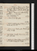
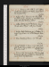
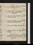
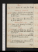
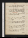
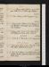

- About
- Diary
- People
- Events
- Reading
- Writing
- Meals
- Meetings
- Search

1830, Jan. 1. F.Cloudesley, revise. Homer, v. 601: 3d Munster, p. 321. 40 ½ / 45
2. Sa. Cloudesley, revise. Homer, v. 651: 3d Munster, Vol. III, p. 84. Call on Bulwern & Colburn. 41 ½ / 45
Jan. 3. M. Su. Indisposede. Homer, v. 709: 3d Munster, p. 236. W calls: call on F Rn: meet Reynolds: Uwins sups.Coughe.43 / 47 ½
4. Tu. M.Cloudesley, revise. Homer, Lib. X, v. 42: 3d Munster, p. 302, fin. Call on Wn. 45 / 49
5. // Tu. Cloudesley, revise. Homer, v. 102. W calls: call, w. W, on Chatfield: M W S, Percy & W dine. Rhumee.46 / 49
6. W.Cloudesley, revise; Preface. Guise, act 1. Call on Judkinn. 45 / 47 ½
7. Th. Homer, v. 179: Boswel, p. 42. Call onW Irving (adv. Maclaine), & M W S: E Leigh, Hamilton & son, & W & E Hopwood // tea & supper.Sir Tho. Lawrence dies .46 / 50
8. F. Preface, revise. Homer, v. 271: Tom Jones, çala: Boswel, p. 78. 45 ½ / 48
9. Sa. Preface, transcribe. Homer, v. 331: Boswel, p. 96.Cooke calls: dine at Woodifields’s, w. Bentley & W H Angelo. 45 / 47
Jan. 10. Su.Preface, revise. Homer, v. 377: Boswel, p. 196.F R calls n. 44 / 46 ½
11. M. Homer, v. 425: Boswel, p. 343. 44 / 46
12. Tu. Preface, revise. Homer, v. 514: Boswel, p. 361: Johnson on Shakespear: Laing on Ossian. 43 / 45 ½
13. W. Homer, v. 579. Slater & W call: call on W Irving, M W S (adv. Jane W & Julia), & Northcote ; adv. Hawkes. 42 ½ / 44
14. Th.Preface, revise. Theatre, Corporal’s Wedding; adv. O’Hanlone:Whites au soir: W calls. 40 / 43
15. F. Preface, revise. Proof. Boswel, p. 470. Meet Poole. Thaw. 40 ½ / 45
16. Sa.Preface, revise. Homer, Lib. XI, v. 55: Pope on Shakespear: Boswel, p. 534. Call on Northcote. 41 / 43
Jan. 17. Su. Camilla. Homer, v. 100. Boswel, p. 638. F R & Jerningham call: Cooke sups. Frost in bedchamber . 38 / 40
18. M. Homer, v. 162: Cid, acts 1, 2. Theatre, Grecian Daughter; adv. Gent & Jerninghame. 35 ½ / 38
19. Tu. Homer, v. 224: Cid, act 3: Boswel, p. 716. M W S & Percy dine; adv. N G. 33 ½ / 37 ½
20. W. Homer, v. 293: Bally Aylmer, çala. R T calls: W dines. Cid, act 4. Thaw.36 ½ / 42 ½
21. Th.Write to W. Homer, v. 353: Life of Byron, p. 130. Percy dines. 40 / 45
22. F. Cid, act 5. Life of Byron, p. 221. Sup at Reynolds’s. 43 / 45 ½
23. Sa.Proof. Bally Aylmer, fin: Byron, p. 270. Call on Northcote. 43 ½ / 46
Jan. 24. Su.Homer, v. 395: Byron, p. 374. Call on Booth; adv. Patten. 44 / 48
25. M. Homer, v. 445: Byron, p. 438. Theatre, Richese.BirminghamTierney dies.45 / 50 ½
26. Tu.Proof. Byron, p. 506.W calls: M W S at tea. 45 ½ / 48
27. W. Byron, p. 670, fin. 45 / 48
28. Th.Proofs. Call on O Rees: meet H Richter. Last Proofs. 45 ½ / 48 ½
29. F. Colman, Records, p. 68. Call on Coates, Gray’s Inn: M W S & Percy dine; adv. Geo. White. 45 / 47
30. Sa. Write to Coates, & to Colburn, for copies. Colman, p. 323. 44 ½ / 47
Jan. 31. Su.On Time, çala. Homer, v. 520: Lost Heir, p. 114. W dines.Cobweb, in left eyee. 40 / 41
Feb. 1. M. Time, çala. Homer, v. 573: Lost Heir, p. 200. Call on Northcote; adv. Rogers & medecin. Frost in bedchamber.36 ½ / 39 ½
2. Tu. Notes. Homer, v. 646: Colman, Vol. II, p. 173. Theatre, Robert the Devil; adv. Talfourd, Spencer & Barhame. 35 / 37
3. W.Time, p. 3. Homer, v. 709: Colman, p. 305, fin. Dr Lister dies.33 1/ (one hour 38 ½ ) / 36 ½
4. Th. Time, p. 4. Homer, v. 774: Lost Heir, p. 242. Theatre, Bride no Bridee: Kenney calls. Parliament meetse.34 / 40
5. F. Time, p. 6/2. Homer, v. 847: Lost Heir, p. 313; Vol. II, p. 68. Hargrave calls.St Anne’s, Sohoe.35 / 41 ½
6. Sa.Time, p. 7/2. Homer, Lib. XII; v. 30: Lost Heir, p. 109. Dine at Uwins’s, w. La Nightingale, Arnot, Stuart, Sass, Morgan, York, &c. Mason Hunter, Scarlock; invité Allan Cunm. 32 ½ / 34
Feb. 7. Su. Time, p. 9/2. Cloudesley, p. 140: Lost Heir, p. 172. Rain.34 / 45 ½
8. M.Time, p. 11. Cloudesley, p. 274: Homer, v. 80. W calls (announce):M W S at tea. 45 ½ / 52 ½
9. Tu. Time, p. 12, & 1/2 page. Homer, v. 140: Cloudesley, Vol. II, p. 124. Call on F Reynolds: Museum; T Shandye: sup at Hodgets’, w. pere & 3 soeurs: Hargrave &M call n. 49 ½ / 51 ½
10. W.Time, revise. Homer, v. 210. F Reynolds calls:M W S dines. (read)48 / 53
11. Th. Time, p. 13, fin. Homer, v. 276: Cloudesley, p. 282. M at tea: sup at Jacob’s. 47 / 51
12. F. Talents, p. 1. Homer, v. 328: Cloudesley, Vol. III, p. 119. Call on Stevenson, oculist. 48 / 52 ½
13. Sa. Talents, p. [3/2?]. Homer, v. 412: Cloudesley, p. 261. Tea Woodifields’s, w. Walker, mrs Burke, Bathiani, &c. 47 ½ / 50
Feb. 14. Su.Talents, p. 4. Write to Colburn. Homer, v. 471: Cloudesley, p. 355. fin.W calls: Hargrave sups. 45 / 49
15. M.Talents, 6 lines. Homer, Lib. XIII, v. 61. A Cunningham, Vol. II, çala. Call on Northcote. 46 / 49
16. Tu.Talents, p. 6/2. Write to R T. A Cunningham, çala. Call on R T; adv. E T junr: meet Bowring: theatre, 1/2 Ninetta, & Tiler; adv. Gent & Bettye. 45 / 46 ½
17. W. Homer, v. 124: A Cunningham, çala. M W S at tea: Crone calls. 43 ½ / 47
18. Th. Talents, p. 6. Homer, v. 181: Lost Heir, p. 316. Call on R Tn: meet//Bowring: W calls n. 44 ½ / 49 ½
19. F. Talents, p. 8. Homer, v. 238: Lost Heir, Vol. III, p. 136.N G at tea. 44 ½ / 48
20. Sa.Talents, p. 11/2. Homer, v. 294: Lost Heir, p. 305, fin. 43 ½ / 50
Feb. 21. Su.Talents, p. 12. Homer, v. 344: Fingal, Book I, II, III: Boswel, Vol. II, p. 87. W dines. 45 / 50 ½
22. M. Talents, p. 13. Homer, v. 401: Fingal, Book IV, V. Theatre, no Henry V. 46 / 50 ½
23. Tu. Homer, v. 462: Fingal, çala. Theatre, Past & Present; adv. Spencer, Barham & E Prenticee. 50 ½ / 56
24. W. Talents, p. 15. Homer, v. 540: Boswel, p. 136. M W S at tea: sup at Reynolds’s. 54 ½ / 58 ½
25. Th. Talents, p. 16. Homer, v. 600: Boswel, p. 170. Call on E Prentice; adv. Noble & Landseer senr: Booth at tea: theatre, Gamester; adv. Bacone. 56 / 61 ½
26. F. Talents, p. 17. Homer, v. 672: Boswel, p. 240. Call on R T; adv.E T: Cooke at tea. Fingal, B. VI. 58 / 63
27. Sa. Talents, p. 19. Homer, v. 753: Temora, B. I: Boswel, p. 314. Call on Colburnn. 59 / 63

Feb. 28. Su.Talents, p. 20. Write to W Irving. Homer, v. 837: Boswel, p. 346. W dines: M W S at tea. 58 / 62
Mar. 1. M.Talents, p. 21. Write to Ollier. Homer, Lib. XIV, v. 81: Boswel, p. 388. Call on Northcote. 58 / 61
2. Tu. Homer, v. 152: Temora, B. II: Boswel, p. 420. Call on Keanna &A Currann: meet M. 57 / 60 ½
3. W. Talents, p. 23/2. Homer, v. 241: Boswel, p. 478.Museum; Leibnitze: E Prentis,M W S & W sup; adv. A Curran: invité à Kenney: Aldis calls. 56 / 59 ½
4. Th. Talents, p. 25/2. Homer, v. 328: Boswel, p. 500: Cloudesley, p. 187. W calls. Cloudesley publishede. 52 /57 ½
5. F. Talents, p. 26/2. Homer, v. 377: Cloudesley, p. 274{.} E Poole calls. 50 ½ / 57 ½
6. Sa.Talents, p. 27, fin. Write to P H G: Homer, v. 469: Cloudesley, Vol. II, p. 178: Boswel, p. 530. Call on W Irvingn: W & Morris (H P) call: meet Stevenson. 51 ½ / 57
Mar. 7. Su.Necessity, p. 2/2. Homer, v. 522: Cloudesley, p. 282: Boswel, p. 566. Call on Ollier: Hargrave sups. 49 / 53 ½
8. M. Necessity, p. 3/2; notes. Homer, Lib. XV, v. 103. Bulwer calls: theatre, Henry V; adv. E Pe:Kenney sups. 49 / 56
9. Tu.Necessity, p. 4/2. Homer, v. 204: Boswel, p. 614. Sup at Hodgets’. 51 ½ / 57
10. W.Necessity, p. 6. Homer, v. 300. Dine at Kenney’s, w. Baddamses. 53 ½ / 58
11. Th. Necessity, p. 7. Homer, v. 404: Cloudesley, Vol. III, p. 48: Boswel, p. 648: Call on Northcote:M W S calls. 55 / 60
12. F. Necessity, p. 8. Homer, v. 501: Boswel, p. 691, fin: Hume, Queen of Scots, çala. 57 / 62
13. Sa.Necessity, 4 lines. Homer, v. 600. Bulwer, card:Cooke & W call: dine at Jerningham’s, w. Hargrave. 56 / 62
Mar. 14. Su. Necessity, p. 10. Homer, v. 652: Longinus. M W S at tea; adv. Hargrave. 54 / 60 ½
15. M.Necessity, p. 11. Homer, v. 746. W calls: M at tea: tea Kenney’s, w. Mortons, Stephens, Coles, &c.54 ½ / 57 ½
16. Tu. Necessity, p. 13, fin. Homer, Lib. XVI, v. 100: Candide, &c, çala. Miss Plaine calls. 51 / 56 ½
17. W. Reverie, p. 3. Homer, v. 200: Candide, &c. F Reynolds calls n: sup at Reynolds’s. 53 / 60
18. Th.Reverie, p. 6/2. Homer, v. 305: Candide, &c, çala. 56 / 60
19. F. Reverie, p. 7. Homer, v. 376. Call on Clint; adv. Blanchard & Bannister: dine at Bulwer, w. col. D’Aguilar, la. Ma. Shepherd & Jerdan; adv. Owen, Knowles, &c: invité à Hodgets: Ollier calls n. N G at tea n. 57 / 59 ½
20. Sa.Reverie, p. 9/2. Homer. v. 443: Candide, çala. Meet Hume: British Artists; adv. Gent, Landseer , Hofland , Prentis , Power , Judkin , Bowring & Hille. 57 / 62
Mar. 21. Su. Reverie, p. 11. Homer, v. 513: Candide, çala. W dines: Hargrave au soir. 57 / 63
22. M. Reverie, p. 12. Homer, v. 602: Candide, çala. Vogel calls: Hudson dines: theatre, Hamlet; adv. We. 58 / 60
23. Tu. Reverie, çala. Homer, v. 701: Candide, çala. Call on Orme (Longman’s). 55 ½ / 60 ½
24. W. Reverie, p. 14/2. Homer, v. 804: Candide, &c. Uwins calls: W at tea. 57 ½ / 63
25. Th.Reverie, p. 15, fin. Homer, v. 867. Write to Kean: tea M W S, w. mrs M Sutton, La M Shepherd, Hares, Pauls, Bulwer, W Irving, Moore, Kenney, Jerningham; invité Theodore Hooke. Merchison. 57 / 63 ½
26. F. Write to toC C. Call on E Poolen:W calls: M W S at tea; adv. Uwins. & Scadding, vestry . 58 / 67
27. Sa.Pinguise. Homer, Lib. XVII, v. 105. W calls n: theatre, Merchant of Venice, C Ge. 60 ½ / 67
Mar. 28. Su.Self-Love, çala. Homer, v. 210: Cardinal Pole, p. 56. Call on Kean. 61 / 66 ½
29. M.Self-Love, çala. Homer, v. 303: Pole, p. 98. W calls: theatre, 3/10 Shylock, & Popping the Qe. 59 / 65
30. Tu. Self-Love, p. 1. Homer, v. 374. Vogel calls: Mrs Clairmont & filles, & M W S dine; adv. W. Clairmonts for Viennae. 60 / 65
31. W. Self-Love, p. 2. Homer, v. 442. Send Three Essays to Murray. Museum; adv. E Poolee. 57 / 62
Apr. 1. Th.Write to Colburn & B. Homer, v. 515: Warbeck, proofs, &c. Call on Ollier. Snow. 54 ½ / 57
2. F. Bulwer on Cloudesley. Homer, v. 596: Bunyan, çala. 51 / 52 ½
3. Sa. Self-Love, p. 4. Homer, v. 672. M at tea. 50 / 51 ½
Apr. 4. Su. Self-Love, p. 7/2. Homer, v. 761. Call on Kenney, &, w. M J, on Cooke: E Prentis dines; adv. W. Atlas & Spectator, on Cloudesley. 47 ½ / 53
5. M. Homer, Lib. XVIII, v. 111. Vogel & W call: M W S & M at tea. 48 / 53
6. Tu.Self-Love, p. 9. Homer, v. 201. Call on Bulwern: Aldises call n: meet L K & T Ht: M at tea: soirée Hare, w. Hallam, sir J Paul, mrs M Sutton, M W S (Dudley, Hooke, &c). Lady Harleys. 49 ½ / 58 ½
7. W.Unwelle. Voltaire, çala. Museum; Selkirke. Sup at mrs Hodgets’, w. miss Burroughs.W calls. 55 / 59 ½
8. Th. Unwell. Homer, v. 284: Voltaire, çala. Museum; De Foee. Cramond calls. 56 ½ / 64
9. F. Self-Love, çala. Homer, v. 368. Call on mrs Jones: meet M: W calls. 62 / 67
10. Sa. Lost Memorandae. Voltaire, çala. Mrs & Miss Clennel & Aunt call. 61 / 63 ½
Apr. 11. Su.Memoranda recovered from Nichols, Printer, Parliamt Streete. Homer, v. 452. Call on Keann: Percy dines; adv. W & M W S. 59 / 62
12. M. Self-Love, p. 11. Homer, v. 522: Voltaire, çala. Call on La. Ma. Shepherd: W Hopwood sups. Write to Bulwer. 59 / 63
13. Tu. Self-Love, p. 12, & 1/2 page. Homer, v. 572. Theatre, Cinderellae. 60 / 63
14. W.Self-Love, p. 13. Homer, v. 616: Bourrienne, p. 76. Percy dines; adv. M W S: sup at Reynolds’s. Call on Northcote. 57 ½ / 64
15. Th. Homer, Lib. XIX, v. 73: Bourrienne, p. 165. W at tea. 60 / 64 ½
16. F. Self-Love, p. 15, fin. Homer, v. 144: Bourrienne, p. 250. Meet Reynoldes. 62 / 65
17. Sa.Self-Love, çala. Homer, v. 214: Bourrienne, p. 328. White calls: theatre, Perfectione. 61 / 64 ½
Apr. 18. Su. Debilee. Homer, v. 236: Bourrienne, p. 420. W dines: M W S at tea: call on Booth; adv. Walker. 60 / 66
19. M. Self-Love, 2 pages. Homer, v. 314: Bourrienne, p. 467; Vol. II, p. 52. Vogel calls. 60 / 65
20. Tu. Rain. Self-Love, revise. Homer, v. 424: Bourrienne, p. 213.N G at tea. 58 / 62
21. W. Self-Love, revise. Homer, Lib. XX, v. 109. Bourrienne, p. 278. W calls: dine at Cooke’s, w. Jerninghm, Cookes senrs, miss Marsh, &c. Yates. 57 / 61 ½
22. Th.Homer, v. 177: Bourrienne, p. 488. 58 / 64
23. F. Self-Love, 1 page. Homer, v. 258: Proofs. Call on M:M W S at tea. Giddiness au soire. 60 / 63
24. Sa. Giddinesse. Self-Love, invent. Homer, v. 317: Carwel, p. 132. 58 / 63
Apr. 25. Su.Self-Love, 1 1/2 pages. Homer, v. 434: Carwel, p. 216. W dines. 57 12 / 63
26. M. Self-Love, revise. Homer, v. 503: Carwel, p. 360, fin. 59 / 65
27. Tu.Novelty, çala. Homer, Lib. XXI, v. 33: Bourrienne, Vol. III, p. 186. 60 / 66
28. W. Novelty, p. 3/2. Homer, v. 121: Bourrienne, p. 260. Sup at Jacob’s, w. Dendy. 62 / 68
29. Th.Novelty, p. 5. Homer, v. 221: Bourrienne, p. 302. M W S at tea. 64 / 70
30. F.Novelty, p. 7/2. Homer, v. 287: Bourrienne, p. 400. Museum; Reese. 66 / 71 ½
May 1. Sa. Novelty, p. 8. Homer, v. 341: Bourrienne, p. 496. Theatre, Hofer; adv. Skeffington, Gent & Spencer & Brighton Russele. Blackwood, on Cloudesley. 66 / 67 ½

May. 2. Su. Novelty, p. 10. Homer, v. 401: Bourrienne, Vol. IV, p. 45. Call on Kean n: W sups. 62 ½ / 66
3. M.Novelty, p. 11/2. Homer, v. 488: Bourrienne, p. 76. Exhibition; adv. Gente: theatre, Isabella; adv. Spencere. 61 ½ / 65
4. Tu.Novelty, p. 12/2. Homer, v. 552: Bourrienne, p. 202. 60 / 66 ½
5. W. Novelty, p. 13. Homer, v. 611: Bourrienne, p. 336. Call on Lane (Ulster Place):W dines; adv. Colburn. 62 / 68
6. Th. Homer, Lib. XXII, v. 89: Bourrienne, p. 472, fin. Call on Stevenson, Lardner, Bulwern & Northcoten: meet Dillon: M W S at tea. 66 / 73
7. F.Novelty, p. 14. Write to Colburn, on St Leon. Homer, v. 156. Teamrs Maugham’s, w. C Jones & mrs Wilks; adv. Wilks. Museum; Priestley, &c.e68 / 72
8. Sa. Novelty, p. 16/2. Homer, v. 201: Paul Clifford, Vol. I. 65 / 67 ½
May 9. Su. Novelty, p. 17, fin: Astronomy, p. 1. Homer, v. 305: P Clifford, Vol. II, p. 108. Call on Booth: W dines. 64
10. M.Astronomy, p. 3/2. Homer, v. 376: P Clifford, p. 324. Dine at Robinsons, w. M W S, Rothwel, Power & Stothard junr. 59 ½ / 63 ½
11. Tu.Astronomy, çala. Homer, v. 459: P Clifford, Vol. III, p. 186. Hodgets calls n. 56 / 58
12. W.Homer, v. 515: P Clifford, p. 329, fin (Write to Bulwer): Warbeck, p. 116. H Prentis & M call: sup at Reynolds’s. 55 ½ / 59
13. Th.Astronomy, p. 4. Homer, Lib. XXIII, v. 102: Warbeck, p. 221. Museum; Newtone. Perkin Warbeck published. 56 ½ / 58 ½
14. F. Museum; Newtone. Homer, v. 211: Warbeck p. 340. Ws sup. 57 / 59
15. Sa. Astronomy, p. 7/2. Homer, v. 305: Warbeck Vol. II, p. 112. Call on Rothwel (Huskisson): sup at Hodgets’, w. miss Burroughs. 57 / 63

May 16. Su. Astronomy, p. 9/2. Homer, v. 361: Warbeck, p. 156. Call on Boothn: M W S & Ws dine. 59 ½ / 65 ½
17. M. Astronomy, p. 9. Homer. v. 430 : Warbeck, p. 258. Call on Booth: meet Colburn: call on Northcote. Scotsman, on Cloudesley. Jew Bill rejected, 228 to 165e. 63 / 70
18. Tu. Astronomy, p. 11. Homer, v. 500: Warbeck, p. 335. Museum; Pinkertone: N G at tea. Edinburgh Review, on Cloudesley. 66 / 71
19. W. Astronomy, cala. Homer, v. 585: Warbeck, Vol. III, p. 130. Museum; Hugh Murraye. Vogel calls. 64 ½ / 67 ½
20. Th.Astronomy, p. 12/2. Homer, v. 666: Warbeck, p. 220. Museum; Nepaule. Call on Colburnn. 65 ½ / 67 ½
21. F.Astronomy, p. 14. Homer, v. 740: Warbeck, p. 273. Dine at Robinson’s, w. Hopper. 62 / 67
22. Sa. Astronomy, p. 15. Homer, p. 825: Warbeck, p. 310. Call on Hodgets: sup at W’s, w. M J &M W S. 62 ½ / 65 ½
May 23. Su. Astronomy, çala. Homer, v. 897: Sadler, p. 24: Warbeck, p. 354, fin. Meet G Jones: call on Booth; adv. Pigeon: dine at Bulwer, w. sir John Doyle, Pendeley & pupils, H Bulwer, Knowles, Maud, CockburnColburn & Ollier. 63 / 68
24. M. Astronomy, p. 16. Homer, Lib. XXIV, v. 54: Sadler, p. 94. Call on S Hodgets & Colburn: M sups. 65 / 67
25. Tu. Nervouse. Homer, v. 158: Sadler, p. 112. Call on S Hodgets: theatre, Spanish Husband; adv. Skeffington & Spencere. 64 / 67
26. W. Astronomy, çala. Homer, v. 238: Sadler, p. 126. Dine at M W S’s, w. Julia; adv. Ws.M J for Highgatee. 62 / 65
27. Th.Astronomy, p. 17. Homer, v. 301: Sadler, p. 146. Museum; Transite: call on Booth. 59 ½ / 64
28. F. Astronomy, p. 19/2. Homer, v. 404. Call on Drinkwater: M W S dines: call onA C, &, w . a note, Colburnn. Amelia. 60 / 62
29. Sa. Astronomy, p. 20/2. Homer, v. 508: Sadler, p. 212. British Gallery (Lawrence), w. M W S, Julia & LouisaRosa Re: call on M; adv. L Knapp. Essays, from Murray (see Mar. 31). 58 ½ / 64
May 30. Su. Astronomy, p. 21/2. Homer, v. 607. Dine at Highgate. Letter to Blackwood. 60 ½ / 63 ½
31. M.Astronomy, p. 23/2. Homer, v. 706: Sadler, p. 232. M W S at tea: M sups. 60 / 63 ½
June 1. Tu. Head achee. Write to Blackwood. Homer, v. 804, fin. Tea miss Curran’s. 60 / 65 ½
2. W. Astronomy, çala. Homeri Ilias, Lib. I, v. 73. Call on Orme (Longman’s): Aldis & Moxon call: M W S at tea. 61 ½ / 65 ½
3. Th.Astronomy, çala. Homer, v. 120. Letter fr. C C: write to Coates. Call on Hodgets: soirée mrs Wood’s, w. Atherston, Home, La. Ramsleyden, Owen, Morgan, Canadian, Aldis, C Jones. 63 ½ / 65 ½
4. F. Astronomy, çala. Homer, v. 205: Buffon, çala. Call on Lardner: dine atH Bulwer’s, w. Edw, Villiers, Mellish, Bowring & Buckingham. 61 / 63
5. Sa.Wait for Brinkleye. Homer, v. 291: Sadler, p. 272. Call on Wsn: M W S & Julia at tea. 61 / 65 ½
June 6. Su. Wait for Brinkleye. Homer, v. 406: A Cunningham, Vol. III, p. 158. Call on F Reynolds; adv. Bernal: dine at Highgate; Adv. Blatspeils & Ws. 63 / 66 ½
7. M.Museum; Brinkleye. Homer, v. 516: Cunningham, p. 246. Tea M W S’s, w. Doyle, 2 Bulwers, Moore, La Ma S, Rothwel, Jerningham, F Reynolds, mrs Coates & 3 Robinsons. 63 ½ / 66
8. Tu.Hebetee. Homer, v. 611: Sadler, p. 344: Cunningham, p. 367, fin. Call on mrs Woodn & Bernaln: Hudson calls. Letter fr. Blackwood. 62 ½ / 65
9. W.Astronomy, p. 24/2. Homer, Lib. II, v. 109. M W S calls. M J from Highgatee. 60 / 64
10. Th. Rain. Astronomy, p. 25. Write to Blackwd. Homer, v. 141.with Five Essays. 60 / 64 11. F. Homer, v. 245. Hampton Court, w. Bulwer: dine at Bulwer’s: Vogel calls n. 60 ½ /
12. Sa.Astronomy, p. 27/2. Homer, v. 332. Call on Bentley (adv. Vogel) & Rodd. 61 / 65

June 13. Su. Astronomy, p. 28. Homer, v. 410: Sadler, p. 371. CallBulwer calls; read Self Love: dine at M W S’s, w. Ws & Julia. 60 / 63 ½
14. M.Astronomy, p. 31/2. Homer, v. 493: Sadler, p. 400. Call on Pickersgil: tea Martin’s, w. Atherstone, Macallum, Heaphy, Willis, Hall & Connor. 59 ½ / 62 ½
15. Tu. Astronomy, p. 34. Homer, v. 590: Sadler, p. 450. Museum; Brinkleye. 59 / 62 ½
16. W. Astronomy, p. 38/2. Homer, v. 694. Call on Bentleyn: Ws sup. Nervouse. 59 / 63
17. Th.Nervouse. Museum; Herschele. Write to Bentley. Homer, v. 760. White & M call: M W S & Percy at tea. 59 / 61 ½
18. F.Homer, v. 877. Museum; Herschele. N G at tea: call on Northcote. 58 ½ / 64
19. Sa.Nervouse. Homer, Lib. III, v. 75: Sadler, p. 478. Exhibitione: call on C & B; signe: call on Hodgetsn. 59 ½ / 64
June 20. Su. Peaceableness, p. 2: Homer, v. 180: Sadler, p. 500.Percy dines; adv. Ws & M W S. 61 / 65
21. M. Fevere. Homer, v. 291: Sadler, p. 600. Museum; Pope, Homere: theatre, Othelloe:Hodgets calls n. 63 ½ / 65 ½
22. Tu.Homer, v. 376: Sadler, çala. W & Hudson call. præsertim, Book IV, ch. 2. 61 / 64
23. W. Comprehension, çala. Homer, v. 461: Sadler, çala: D’Israeli, çala. Vogel calls: call on Ollier, Rothwelna, & Bain ; adv. Knyvet: meet sir R Phillips. 60 / 65
24. Th. Homer, Lib. IV, v. 103: Sadler, çala: D’Israeli, Vol. III, p. 142. Call on Martin; adv. Morgan: sup at Reynolds’s. 62 ½ / 65 ½
25. F.Homer, v. 140: D’Israeli, p. 268.M W S, Percy & E Ws at tea; adv. W. 64 / 67 ½
26. Sa.Belief, p. 2. Homer, v. 225: Roscoe, p. 50. W calls: call on Northcote. George IV dies . 67 / 70
June 27. Su. Belief, p. 4. Homer, v. 316: Northcote, p. 184. Ws au soir: soirée mrs Wood’s, w. Atherston, Alcala, Sketch, 3 Peruvians, &c. 68 / 72
28. M. Belief, p. 5. Homer, v. 402: Northcote, p. 312. Judkin & Ws call: tea Woodifields’s, w. Walker, &c. Letter from Blackwood. 67 ½ / 70 ½
29. Tu.Roscoe, p. 212. M W S at tea: A Curran calls: sup atW’s, w. M J. 68 / 70
30. W. Homer, v. 472: Roscoe, p. 310. Call on E Poolen: sup at Hodgets’. 67 / 68 ½
July 1. Th. Homer, v. 544: Roscoe, p. 419. A Curran’s paintings, w. mrs R C & M Je: dine at Judkin’s, w. Croly, Quail, Cromfield, Wilson & Philip; adinvités A Cunningham & Hogg. 66 / 69
2. F.Belief, p. 6. Homer, Lib. V, v. 123: Roscoe, p. 478. Mrs White & Ws dine. 67 / 68
3. // Sa. Belief, çala (Pro Archia). Homer, v. 216: Roscoe, p. 556. Call on Bentleyn: theatre, Se- & Re-paratione. 66 / 68 ½
July 4. Su. Belief, p. 7. Homer, v. 333: Roscoe, p. 585, fin. Call on Booth & Northcote: soirée mrs Wood’s, w. H Payne, Atherston, Alcala, Canadian, Goldsmid. 65 / 68 ½
5. M. Rhumee. Homer, v. 430. Call on Bentley(Galatea). nine dayse. Cloudesley 1139 June 26 Colyton, W 13 . . .65 / 67 ½
6. Tu.Homer, v. 532: Pope, çala. 65 ½ / 68 ½
7. W. Write to Cadell, Edinburgh. Homer, v. 654. Ste. Prentis calls (Cid), & Ws. 65 / 67 ½
8. Th.Homer, v. 777: Huarte, çala. S Prentis calls; criticise: Ws sups. 63 ½ / 67
9. F.Write to M W S & Bartley. Homer, v. 909. Lane calls n: call on Rodd. 62 ½ / 66
10. Sa. Galatea, p. 2/2. Homer, Lib. VI, v. 130. P W, Jas IV, p. 128. Call on Pickersgil, sit: F R calls n. 62 ½ / 66 ½
July 11. Su. Homer, v. 285: P W, p. 248. Call on Booth: tea E Leigh’s, w. mds Davies, Leigh, Hamilton, mr Jones & M J. 63 / 66 ½
12. M.Belief, 11 lines. Homer, v. 380: P W, p. 380. Vol. II. Meet W: evening Martin’s, w. miss Webb, Cont, Willis, Atherston, Widmore, Joblins 65 ½ / 67
13. Tu.Letters. Homer, v. 475: P W, Vol. III. Crone&F R call: call on H Paynen. Letter from R Cadell. 63 / 67 ½
14. W. Relapsee. Write to Anderson, junr, & Bulwer. Homer, v. 529; Lib. VII, v. 66. Sit to Pickersgil: Holm calls. 64 ½ / 70
15. Th. Biene. Belief, p. 9/2. Homer, v. 170.Holm calls. 67 ½ / 70 ½
16. F.Throate. Belief, p. 10/2. Homer, v. 286. Sit to Pickersgil: theatre, Force of Nature, act 1e: sup at Reynds. N G at tea: Ws call n. expect Ric. Lane. 67 ½ / 70
17. Sa.Homer, v. 384: Warbeck, p. 82. M W S breakfasts: W H Angelo calls: dine at Holm’s, w. Chichester, Sedgwick, Woods, miss Hall & Wilks. 66 / 67 ½
July 18. Su. Belief, p. 10. Homer, v. 482: Warbeck, p. 258. Sit to Pickersgil; adv. Mme. Rain. 66 / 66 ½
19. M. Homer, Lib. VIII, v. 101: Warbeck, p. 340; Vol. II, 172. Call on Orme:mrs Williams at tea. adv. miss Webb65 / 68
20. Tu. Homer, v. 211: Pope, Correspondence, çala. Call on Uwins & Ws:N G calls. 65 ½ / 68
21. W. Belief, çala. Homer, v. 322. Call on Bentleyn; & Northcote: Ste. Prentis dines; adv. Ws. 66 / 70
22. Th. Homer, v. 408: Pope, çala. Call on Moxon. 68 / 70 ½
23. F. Belief, p. 11. Homer, v. 561: Pope, çala. Call on Pickersgil. Prorogatione. 69 / 72 ½
24. Sa.Swiftsure, to South Ende: dine atM W S, w. Julia, Julian & Percy: sleep at Ship, 2 nights. Dissolutione.70 /
July 25. Su. Amelia, Vol. I. Sail: pier. F R calls n. Ordinances, Charles Xe.
26. M. Swiftsure, to Londone: dine in Gower Plce. H H Holm calls n. 1/2 Midsummer Night: Amelia, Vol. II, p. 44. / 78 ½
27. Tu. Homer, Lib. IX, v. 102: Spurzheim: Amelia, p. 200: Call on F R. Battle of Paris, 3 dayse.75 / 81
28. W.Homer, v. 214: Amelia, p. 328; Vol. III, p. 256. Lombard Street. 2nd daye. 73 / 82
29. Th.Belief, p. 12. Homer, v. 319: Amelia, p. 388; Vol. IV, p. 82. W calls: call on Lambn & Coates: sup at Hodgets’. 3rd daye.75 ½ / 80 ½
30. F.Homer, v. 429: Amelia, p. 256: Call on H Holm, w. M J: M W S & Percy dine; adv. Ws. 76 / 81
31. Sa. Love & Friendship, revise. Homer, v. 524: Amelia, p. 356, fin.White calls. 73 ½ / 77
Aug. 1. Su.Throate. Homer, v. 601: AmeliJoseph Andrews, p. 177. Sit to Pickersgil, 5. 72 / 74 ½
2. M. Rain. Homer, v. 709: Andrews, p. 282. Kean, sale, & Couriere: W calls, 12 midnight. 70 ½ / 71
3. Tu. Homer, Lib. X, v. 130. Andrews, p. 358. Call on Boothn, & Northcote. Chambers assemblee. 67 / 70
4. W. Leisure, p. 2/2. Homer, v. 253: Andrews, p. 444, fin. Sit to Pickersgil, 6. 68 ½ / 72 ½
5. Th. Leisure, p. 3. Homer, v. 331: Coleridge, Leaves, cala: Warbeck, p. 262. Call on Booth:M W S at tea. 70 ½ / 73
6. F.Leisure, p. 4. Homer, v. 437. Call on Bull. Letters, Posthumous. 66 / 68 ½
7. Sa.Chille. Leisure, p. 5/2. Homer, v. 579. E Prentis calls: call on Martinn: nur. dines. D’Orleans declared K of ye Frenche. 66 / 68 ½
Aug. 8. Su.Leisure, p. 6/2. Homer, Lib. XI, v. 98: Norway, p. 50: Spirit of Age, çala.M W S & Cooke call: sit to Pickersgil , 7, w. M J (adv. A Cunningm.)66 ½ / 69
9. M. Leisure, p. 6. Write to Booth. Homer, v. 210: Norway, p. 212. Call on Isa. Booth. Louis Philip I inauguratede. 65 ½ / 69
10. Tu.Leisure, p. 8/2. Homer, v. 312: Spirit of Age, çala. Museum; Popee. Sup at Reynolds’s, w. Sophiaa & Stella Boaden (toothe). 65 ½ / 67
11. W.Leisure, p. 8. Homer, v. 410.Bannister calls: sit to Pickersgil, 8: theatre, Battle of Hexham e. 65 / 69 ½
12. Th.Leisure, p. 10/2. Homer, v. 520: Child Harold, C. I. Pickersgil & Uwins sup; invités F R & Jerninghm. 66 ½ / 69
13. F.Rain. Homer, v. 616: Child Harold, C. II: Norway, p. 264, fin. Call on Colburn & B: Jerningham sups. meet Judkin. 66 ½
14. Sa. Homer, v. 680: Warbeck, p. 335; Vol. III, p. 61. Sit to Pickersgil, 9. 62 ½ / 67
Aug. 15. Su. Leisure, p. 12. Homer, p. 760: Warbeck, p. 112. Call on Booth: M W S dines; adv. Ws. 63 ½ / 66 ½
16. M.Mind & Body, çala. Homer, v. 847: Warbk, p. 296. Aldis & La. call: meet L Baddams: call on Ollier. 63 ½ / 67
17. Tu. Homer, Lib. XII, v. 107: Warbeck, p. 354. fin. Sit to Pickersgil, 10, w. M J. (adv. L Chancr.)62 / 64
18. W. Write to Rothsay & P P. Homer, v. 210. Call on Bentley & Ollier (Essays): M W S at tea: mrs Bedingfield & fille call. 62 ½ / 65 ½
19. Th. Body & Mind, p. 2. Homer, v. 310: D’Israeli, Vol. III, p. 428. Lawrence, Pictures, w. M Je: call on R Lane. Pickersgil’s, w. Uwins. 63 / 65 ½
20. F.Body & Mind, p. 4/2. Homer, v. 412: Edin. Rev.Call on Taylor, G S : Holm calls. 60 ½ / 65
21. Sa.Body & Mind, p. 5/2, & 1/2 page. Homer, v. 471: D’Israeli, p. 473. Call on Mackintosh, & A Currann. 59 / 65 ½
Aug. 22. Su.Body & Mind, p. 6. Homer, Lib. XIII, v. 94: Burke, Reflections, p. 50. Call on Booth, & Cooken. 62 ½ / 68
23. M. Prospectus. Sir J Davies, p. 56: D’Israeli, V. IV, p. 62. Call on Lardner & Mackintosh: Mackintosh jr sups; adv. Lane; invités pere & Holm. 66 / 68
24. Tu.Body & Mind, p.7/2. Homer, v. 200: D’Israeli, p. 134.M W S, Holm &Cooke call:meet Reynolds, w. M W S. 65 / 69
25. W.Body & Mind, p. 9. Homer, v. 294: D’Israeli, p. 250. W at tea: Cooke & M sup. 66 / 69 ½
26. Th.Body & Mind, p. 10, & 1 page. Homer, v. 393: D’Israeli, p. 290.N G at tea: theatre, Husband at Sighte. Insurrection at Brusselse.65 / 68
27. F.Homer, v. 508: D’Israeli, p. 344.Lardner calls n (cross): call on Northcote: M W S dines (Body & Mind). Notes fr. Lardner & Mackintosh. 64 / 67 ½
28. Sa.Body & Mind, çala. Homer, v. 600: D’Israeli, p. 410. Cast at Spurzheim’s, w. Holms, Cooke & M J; adv. mrs Maugham: theatre, Honest Fraudse.64 / 67
Aug. 29. Su.Indisposede. Body & Mind, çala. Homer, v. 660: D’Israeli, p. 548, fin. Call on Booth.W sups. 63 / 67
30. M.Body & Mind, 1 page. Homer, v. 770. Call on Lardner (adv. Mackenzie). Lawlessness of Man, çala. 62 / 65
31. Tu.Feverishe. Lawlessness of Man, çala. Homer, v. 837: Gaudentio, p. 22. Seek Mackintosh: Hodgets sups. 61 / 67 ½
Sep. 1. W.Lawlessness of Man, çala. Homer, Lib. XIV, v. 108. Museum; Spectatore. 62 ½ / 67 ½
2. Th.Human Rashness, p. 3/2. Homer, v. 210. Call on Longman (Orme), & Baddamsn:M W S at tea; adv. F R & W: Hudson sups (eclipse of moon). 64 / 67 ½
3. F.Rashness, p. 5. Homer, v. 330: Gervase Skinner, p. 60. Museum; Prideauxe. N G at tea. 64 / 66 ½
4. Sa. Rashness, p. 8/2. Homer, v. 439: Cain: G Skinner, p. 132. Call on Pickersgilna: sup at F R’s, w. Sophia & Stella Boaden. 64 / 67
Sep. 5. Su.Rashness, 7 lines. Homer, v. 522: Manfred: G Skinner, p. 164: Vol. II, p. 148. Call on Booth:W dines. 63 ½ / 67 ½
6. M. Rashness, p. 10/2. Write to Booth. G Skinner, p. 333, fin. Sup at Martin’s, w. Whitton & Atherston (adv. Dr Ridgway). 63 / 65
7. Tu. Rashness, p. 11/2. Homer, Rh. O, v. 100: Gaudentio, p. 60.Zoological Gardene: M W S at tea. Letter from Longman. Insurrection at Brunswicke.63 / 65 ½
8. W. Rashness, p. 13. Homer, v. 217: Cecilia, p. 40. Booth & H Holm call n. 63 / 67 ½
9. Th.Rashness, p. 14/2. Homer, v. 342. Write to Longman, on Novel. Cecilia, p. 66. Call on Boothn: seek Ollier: mesd Leighs, Davies & Hamilton, & Jones at tea. 62 ½ / 65 ½
10. F. Innocence, p. 3/2. Homer, v. 428: Cecilia, p. 124. Zoological, w. We: W dines: Cooke sups. 63 / 65 ½
11. Sa.Innocence, p. 4/2. Write to Mackintosh. Homer, v. 531: Cecilia, p. 262. Call on Ollier. 61 / 66 ½
Sep. 12. Su.Innocence, p. 4, & 1/2 page. Homer, v. 629: Cecilia, p. 299; Vol. II, p. 34. Call on Booth, twice (adv. Coke), & R Taylor. 62 / 66
13. M.Prospectuses. Write to R Taylor. Cecilia, p. 106. Call on Lardner & Northcote: meet H Payne: M W S at tea. 60 ½ / 65
14. Tu. Necromanteia. Homer, v. 678: Cecilia, p. 141. Bannister calls: theatre, Ambitione. Museum; Delrioe. illeg.62 / 67 ½
15. W.Innocence, p. 7, 8/2. Homer, v. 746. Dine at Ollier’s, w. Kent & Gatty. Huskisson dies . 61 / 65
16. Th. Innocence, çala. Write to Bulwer & R Taylor. Homer, , v. 111: Cecilia, p. 194. M W S dines. 63 ½ / 67 ½
17. F.Innocence, p. 9/2. Homer, v. 209: Cecilia, p. 244. Call on H Holmn: dine atF R’s, w. Bernal, Lane & Watts. 62 ½ / 65
18. Sa. Innocence, p. 10. Homer, v. 312: Cecilia, p. 285; Vol. III, p. 163. Call on Hodgets &mrs Pickersgil.PrimeHazlit dies. 62 / 65Verax

Sep. 19. Su. Abortion, p. 1/2. Homer, v. 383: Cecilia, p. 253. M, R T & H Holm calls. 61 / 65 ½
20. M.Abortion, p. 2/2. Homer, v. 474: Cecilia, p. 321; Vol. IV, p. 74. Call on Uwins, medn, & Northcote ; adv. Ward. 63 / 67
21. Tu. Abortion, çala. Homer, v. 580: Cecilia, p. 201. Call on C Knight: meet mrs A Boinville: theatre, Barber of Seville; adv. Skeffington & Robleye. 61 ½ / 63 ½
22. W. Abortion, iterum. Homer, v. 665: Cecilia, p. 293: Scot, Demonology, p. 94. 58 ½ / 65
23. Th. Homer, v. 829: Demonology, p. 200. Arthur Smith calls.Battle of Brussels, 4 dayse.61 / 65 ½
24. F.Homer, v. 867: Demonology, p. 402, fin. Arthur Smith calls: meet B Montagu. 61 ½ / 65
25. Sa. Homer, , v. 131: Cecilia, Vol. V, p. 112. Call on Longman & Rees: M W S dines: meet Rutt, 70. 59 / 65
Sep. 26. Su.Abortion, p. 3. Homer, v. 232: Cecilia, p. 250. W dines. 58 / 64 ½
27. M. Abortion, p. 5/2. Homer, v. 332: Cecilia, p. 321, fin. Museum; Naudé:eM W dines: sup at Hodgets’. Answer from Longman. 60 / 63 ½
28. Tu. Sore Throate. Homer, v. 412: James I, p. 17. Museum; Baylee. W calls. Answer from Tegg. 63 / 66
29. W.Fevere. Necromancy, çala. Homer, v. 515. Museum; Observere:W dines: Drury Lane, w. do: adv. Mortons, Barhams , Beasley , Bartley , J Collier , T Hill , T Hte. 62 ½ / 66
30. Th.Abortion, 12 lines. Homer, v. 633: Demonism, çala. Museum; Wieruse. 60 / 64 ½
Oct. 1. F.Abortion, p. 7. Homer, v. 693: Faustus. Percy dines; adv. Art. Smith: Museum; Camerariuse. Decree of Ferdinande60 ½ / 64
2. Sa. Inanimatede. Homer, v. 761: Passion & Principle, Vol. I. Art. Smith sups. 62 / 66

Oct. 3. Su.Abortion, p. 9. Homer, , v. 116: Passion & Preje, Vol. II, p. 96.M W S & W dine: R T calls, & sups . 64 / 68
4. M.Abortion, 10 lines. Write to R T, A Lee & Morton. Homer, v. 221: Passion & Pe, p. 368.Museum; Wieruse. 64 / 66 ½
5. Tu.Abortion, p. 10. Homer, v. 315: Passion & Pre, p. 412. Dine at Uwins’s, w. Const, sir Jas Williams & fe, R H Solly, Clutterbuck, John Smith, Drew & Sass: N G calls n. 60 / 67
6. W. Rhumee. Homer, v. 409: Grojan. Museum; Faustuse.A Smith calls: theatre, Venice Pd, acts 2, 3, 4e:W sups. 60 / 63
7. Th. Abortion, 1/2 page, frustra. Homer, v. 501. Museum; Schelhorne: M W S & W dine. 59 ½ / 65
8. F.Abortion, p. 12. Homer, 616. Museum; T Roscoe; adv. Boothe: call on Northcote (Richardson). 60 ½ / 67
9. Sa.Abortion, p. 13. Homer, , v. 111: Reynard ye Fox, p. 54.A Smith calls: Crone au soir. 61 ½ / 64 ½

Oct. 10. Su.Abortion, p. 15. Homer, v. 214: Reynard, p. 240, fin. Meet Pickersgils: A Smith &Wn call: call on R T, soir. 61 / 65
11. M.Inanimatede. Write to R T. Homer, v. 314: Faustus, çala. W calls: Museum; Schelhorn; adv. Loudonse: theatre, 2/5 Romeoe. 60 / 63
12. Tu. Fame, p. 3/2. Homer, v. 424. Museum; Schelhorne. M W S &N G at tea. 60 / 63
13. W. Fame, p. 4. Homer, , v. 114: Tale of Tub, çala. 59 ½ / 63 ½
14. Th.Fame, 9 lines. Homer, v. 212. W & L Baddams call: call on C Jonesn: tea Baddams’s, w. Kenney, 4 Mortons, Scralton, Dr Carlisle, & 2 Edwardses, & ten. A Smith calls. Life of Chaucer, çala.Barrêl, musique. 59 / 64
15. F. Fame, p. 5. Homer, v. 266: Crusoe, p. 42. Call on R T, & Judkinn. 57 / 62
16. Sa.Fame, p. 7/2. Homer, v. 366: Water Witch, p. 76. Judkin calls, R R & Julian Young: call on Lambna: sup at Reynolds’s, w. S & S Boaden; adv. Macready. 56 / 62
Oct. 17. Su. Fame, çala. Homer, v. 424: Water Witch, p. 268. Cooke calls: M W S & W dine. Fog: Diarrhoeae.56 / 62
18. M.Fame, çala. Homer, v. 503: Water Witch, p. 321. White calls: theatre, Virginius; adv. Collier & M Mortone:Ws sup. Answer from Eff. Wilson. Tumults at Parise.57 / 63
19. Tu.Rhumee. Fame, çala. Homer, , v. 73: Water Witch, Vol. II, p. 236. W calls. 59 / 65 ½
20. W.Fame, p. 8/2. Write to R Crone. Homer, v. 121: Water Witch, p. 316. Theatre, Jew of Arragone. Call on mrs Hodgets. 63 / 69 ½
21. Th.Fame, p. 10. Homer, v. 183: Water Witch, Vol. III, p. 136. Call on F R: sup at W’s, w. M J; adv. Clarke. 64 ½ / 69 ½
22. F. Fame, p. 11. Homer, v. 256: Water Witch, p. 264. P P calls: meet Effingham Wilson, at R T. M W S at tea. 64 ½ / 69
23. Sa.Essays, revise. Homer, v. 323: Water Witch, p. 308, fin. Meet Macready. 66 / 68 ½
Oct. 24. Su.Essays, revise. Homer, v. 393: Morgan, France, p. 105. Slater calls: M W S dines. 62 ½ / 65
25. M. Rain. Homer, v. 480: Morgan, p. 379. 62 / 67.
26. Tu.Essays, revise. Homer, v. 552: Morgan, p. 527. Museum; Thucydidese: call on Northcote (adv. Knighton). 62 / 66
27. W.Essays, revise. Homer, v. 611: Crusoe, p. 86. Meet Effingham Wilson, at R T (contract). Go to press. 56 / 59 ½
28. Th.Fame, p. 12. Homer, X, v. 76: Crusoe, p. 130. Antwerp burnede.58 / 64
29. F.Fame, p. 12/2. Homer, v. 144: Crusoe, p. 150.W calls: call on Lockhart (Demonism). 60 / 63
30. Sa.Fame, p. 14. Homer, v. 215. Meet Ayrton: call on Bain: theatre, Carnival of Naples; adv. Talfourdse. M W S at tea. 57 / 62 ½

Oct. 31. Su.Fame, 10 lines. Homer, v. 316.Crone calls: //call on Booth, & (soir) Hodgets. 56 ½ / 63
Nov. 1. M.Essays, revise. Homer, v. 395. Museum; Du Bartase: theatre, Henry Ve. 60 / 65
2. Tu.Rebelliousness, 1/2 page. Homer, v. 476: Crusoe, p. 179. Museum; Du Bartase: sup at Jacob’s. Parliament opense.Wellington v. Reforme. Speech for K. of Hollde. 61 / 64
3. W.Proof. Homer, v. 516: P Herald, çala. W calls. 61 / 65 ½
4. Th. Essays, revise. Write to Lockhart. Homer, , v. 113: P Herald, çala. Call, Glo. Street, for M J. 62 / 65
5. F. Essays, revise; Preface. Homer, v. 183. Meet Coates: Uwins & M W S dine; Kennies & M W S sup. answer from Lockhart. 60 / 63 ½
6. Sa.Essays, revise. Proof. Captain Carleton, p. 70. Call on Ollier. 62 / 66
Nov. 7. Su. Essays, revise. Proof. Call on Booth: Ws dine. City dinner (Nov. 9) abandonede.62 ½ / 64
8. M. Essays, revise. Homer, v. 258: Sir W Drummond, p. 22. Sup at Martin’s, w. Heaphy, 2 Landseers; Whitson, Atherston & Folgey. 58 ½ / 62
9. Tu.Essays, revise. Homer, v. 325: Sir W Drummond, çala: Morgan, Vol. II, p. 140. 54 ½ / 59 ½
10. W. Self-Love, 1/2 page. Homer, v. 361: Morgan, p. 293. Sup at Reynolds’s. 56 / 61 ½
11. Th. Languide. Proof. Homer, v. 402: Morgan, p. 393. M W S at tea: theatre, 1/2 Hide & Seeke. 58 / 62
12. F. Essays, revise. Proof. Homer, v. 430: Morgan, p. 492. N G at tea: theatre, 1/2 Henry IV, & Turning Tables; adv. Aldis, F Ht & H Paynee. 55 ½ / 60
13. Sa.Free Will, 1/2 page; revise. Proof. Homer, v. 445: Morgan, p. 559, fin. 54 ½ / 59 ½
Nov. 14. Su.Homer, v. 513: Van Halen, çala. Call on Booth (Astronomy): Ws dine. 57 / 60 ½
15. M.Love, p. 11. Homer, v. 600: Montaigne, çala. Call on Booth & Northcote. Civil List Committee, 233 to 204e.57 ½ / 62
16. Tu.Love, p. 12. Proof. Montaigne, p. 34. E Prentis calls. Wellington resignse.58 ½ / 63 ½
17. W.Love, p. 14/2. Homer, v. 700. Meet Rogers:Kenney calls: M W S dines; adv. Hudson. 58 / 61 ½
18. Th. Love, 2 pp. Proof. Montaigne, p. 50. Theatre, 7/10 As You Like Ite. 54 ½ / 57
19. F. Youth, p. 3. Homer, v. 765. Letter to Rogers. 51 / 56
20. Sa.Youth, p. 6/2. Proof. Dine at Woodifield’s, w. Bentley, Lavigne & 2 Angelos. 51 / 55
Nov. 21. Su. Youth, p. 8/2. Homer, v. 849: Montaigne, p. 60. W dines: Emily calls. 52 ½ / 59 ½
22. M.Youth, p. 10/2, fin. Homer, v. 897: S Journey, Vol. I. Letter to Melbourne. Earl Grey, Treasurye: Brougham, Chancellore.57 / 60
23. Tu.Essays, revise. Homer, , v. 103. M W S at tea. 54 ½ / 59
24. W.Frankness, p. 2/2. Homer, v. 216: S Journey, Vol. II. 52 ½ / 56
25. Th.Frankness, p. 3. Homer, v. 313.M W S & W call: call on Kennies, w. M Jn. 48 ½ / 51 ½
26. F.Frankness, p. 4. Homer, v. 410: Junius, çala. Call on Chatfield, w. W: sup atKenny’s, w. 4 Mortons & R R. 48 ½ / 51
27. Sa.Frankness, p. 5. Invent Diffidence & Complacency. Letter to Brougham. Homer, v. 512. Meet Boaden(Polonius). Falle.48 ½ / 52
Nov. 28. Su.Atmosphere, 6 days. Homer, v. 612: Henry VIII, acts 1, 2, 3. W calls. 48 / 53
29. M. Atmosphere. Homer, v. 706: Henry VIII, fin. Junius, çala. Sup at Hodgets’. 51 ½ / 53 ½
30. Tu. Frankness, p. 6. Homer, v. 804. Theatre, Chancery Suit; adv. SpencerStanhopee. 52 / 55
Dec. 1. W. Homeri Ilias, v. 120.M W S & R R call. Gell, on Troy, çala. 51 ½ / 53
2. Th. Write to Melbourne & Brougham. Homer, v. 162. W calls. 49 / 52
3. F. Essays, revise. Homer, v. 244: Farquhar, çala. Call on M W S; adv. Julia. 47 ½ / 50
4. Sa.Essays, revise. Proof. Homer, v. 273.P P’s dine; adv. M, & (après) Ws.Prolapsus parce. Jan Nov. 19, 1827e48 ½ / 51Jan. 19, 1829
Dec. 5. Su.Essays, revise. Homer, v. 351. W calls. 49 ½ / 52
6. M. Love, çala. Write to Mackintosh; call, w. lettrs.M W S dines.Ellis 49 ½ / 55 ½
7. Tu.Love, 8 lines. Homer, v. 431. M W S, Colburn & W call: sup at Reynolds’s. 52 ½ / 55
8. W. Love, 2 pp. Invent Moral Abortion. Homer, v. 550: Would if Could. ( Dixon’s .)54 / 56
9. Th.Fatigued & nervous: suffoquée. Homer, v. 611. Moral Abortion, çala. Man of Mode, acts 1, 2, 3.W calls. Holm au soir. 54 / 56
10. F. Love, 1/2 page. Human Virtue, çala (epilogue). Epistle to Curio. Call on Reynolds. Homer, , ver. 105. 54 / 54 ½
11. Sa.Love, 1 1/2 pp. Homer, v. 210. Dine at Ws, w. M J &M W S; adv. T Ht. 50 / 52 ½

Dec. 12. Su.Love, revise. Homer, v. 300: Man of Mode, fin. 47 ½ / 49 ½
13. M. Frankness, p. 8, & 1 page. Homer, v. 370. Call on S Hodgets:M W S &N G at tea: sup at Martin’s, w. Croly, Caunter, Heaphy, Atherston, C Lr. 46 ½ / 48 ½
14. Tu. Frankness, p. 9. Homer, v. 433: Love in Tub. 44 ½ / 49 ½
15. W.Frankness, p. 10, & 1 page. Homer, v. 516. Call on Mackintosh: theatre, Werner; adv. Skeffington, Stanhope , Gent & T Hte. 48 ½ / 50 ½
16. Th. Ballot, p. 2. Homer, v. 590: Werner, acts 1, 2, 3. Call on L Kenney, w. M J(Letter fr. Harwood). 48 / 50
17. F.Ballot, p. 4. Homer, v. 660: Werner, act 4, 5: Sardanapalus, acts, 1, 2. Snow.45 / 48
18. Sa.Ballot, p. 7/2. Homer, v. 700: Sardanapalus, fin. M calls. 45 / 48
Dec. 19. Su. Ballot, p. 10/2. Homer, v. 810: Deformed T, act 1. C Rosser calls: call on S Hodgets: W dines. 45 ½ / 50
20. M. Ballot, p. 12. Homer, v. 877: Deformed T, fin; Tasso. Call on Hudson. 47 ½ / 50 ½
21. Tu. Ballot, p. 13: Diffidence, p. 1. Homer, I, v. 110: Beppo. M Gisborne & Picken call: call on Northcote; adv. Hilman. Sentence of Polignac & 3e.47 / 52
22. W.Diffidence, p. 3/2. Homer, v. 202: Spurzheim, cala. Call on Holm. 51 ½ / 54 ½
23. Th.Diffidence, p. 5/2. Homer, v. 310. Call on Cooken, w. M J: sup at M W S’s, w. Gisbornes, Hoggs & Julia R; adv. Robinson. 49 / 50
24. F. Diffidence, p. 7/2. Homer, v. 400: Life of Burke, p. 100. M Gisborne calls. 40 / 41
25. Sa. Diffidence, p. 8: Self-Complancency, p. 1. Homer, v. 461. Holm calls: M W S, Percy & Ws dine{;} adv. T Ht. La Fayette resignse. Frost in Bed Chamber. 35 ½ / 38

Dec. 26. Su. Self-Complacency, p. 2/2; revise. Homer, v. 103: Life of Burke, p. 147. 35 ½ / 40 ½
27. M. Self-Complacency, p. 3/2; revise. Write to Amyot, for Crone. Homer, v. 171: D Juan, C. I: Life of Burke, p. 244. C Rosser calls. 38 ½ / 42 ½
28. Tu.Self-Complacency, p. 5/2: Phrenology, p. 2/2. Homer, v. 241: Life of Burke, p. 296. Cookes call. Davison dies.42 / 45
29. W.Self-Complacency, p. 6. Homer, v. 300: Life of Burke, p. 364. Call on Uwinsna. 43 ½ / 48
30. Th.Self-Complacency, p. 7/2: Phrenology, p. 3. Homer, v. 350: Life of Burke, p. 398. 46 ½ / 50 ½
31. F.Self-Complacency, p. 8. Homer, v. 370: Life of Burke, p. 432. Call on Gisbornes, w. M J: dine atM W S’s, w. M J & Ws. Genlis dies.50 / 52 ½
Contact --  -- Cookies/Privacy
-- Cookies/Privacy